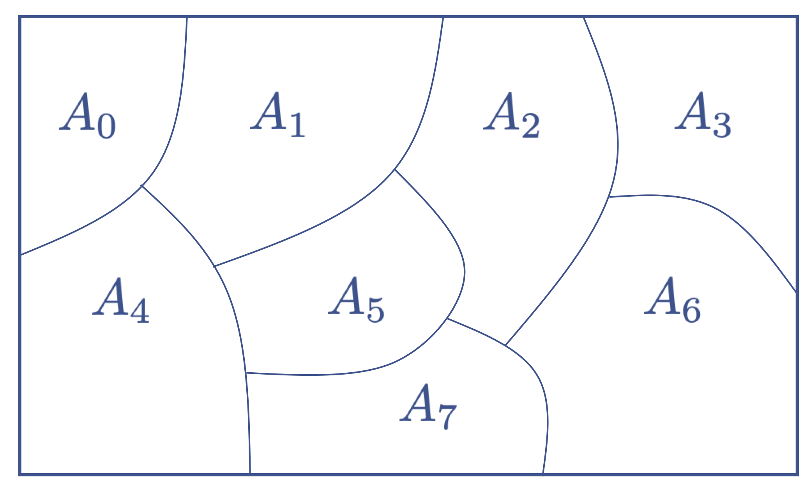
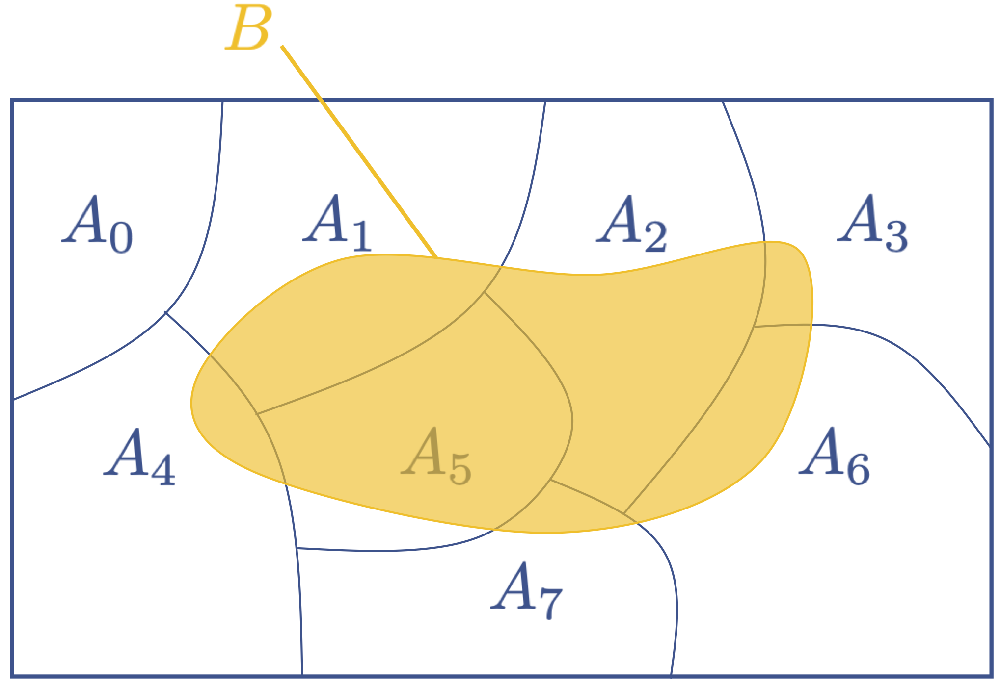
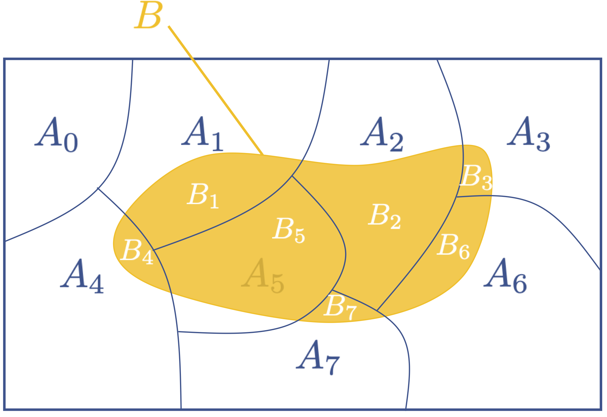

Chain Rules and Total Probability
Contents
6.9. Chain Rules and Total Probability#
Chain rules and total probability use conditional probability to decompose the probability of an event. The goal is to express unknown probabilities of events in terms of probabilities that we already know.
6.9.1. Using Conditional Probability to Decompose Events: Part 1 – Chain Rules#
In working with probability, we often need to find probabilities of intersections of events, while only having knowledge of the probabilities of individual events and conditional probabilities of combinations of the events. Chain rules are often helpful in these cases:
DEFINITION
- chain rules#
express the probability of an intersection of events in terms of a sequence of conditional probabilities involving those events
This is easiest to understand for the case of two events, \(A\) and \(B\). From the definition of conditional probability, we can write \(P(A|B)\) as
and we can write \(P(B|A)\) as
After manipulating the expressions as shown, we get two different formula for expressing \(P(A \cap B)\). These are chain rules for the probability of the intersection of two events. Such rules are often used when:
Two events are dependent on each other, but the relation is simple if the outcome of one of the experiments is known.
The events are at two different point in a system, such as the input and output of a system.
Example
A simple example of the former is in card games. Two cards are drawn (without replacement) from a deck of 52 cards (without jokers). What is the probability that they are both Aces? Let \(A_i\) be the event that the card on draw \(i\) is an Ace. Then the most natural way to apply the chain rule is to write
The probability of getting an Ace in draw 1 is 4/52=1/13 because there are 4 Aces in the deck of 52 cards. The probability of getting an Ace on the second draw given that the first draw was an Ace is 3/51 = 1/17 because after the first draw, there are 3 Aces left in the remaining deck of 51 cards. Thus,
As a check, we can compare with a solution using combinatorics. There are
ways to choose the two Aces from the four total Aces. There are
ways to choose two cards from 52. So,
which matches our answer using conditional probability.
The solution using conditional probability is usually much more intuitive for learners who are new to probability, but being able to use both techniques is a powerful method for checking your work
Review Questions
Example
For the Magician’s Coin problem, what is the probability of getting the Fair coin and it coming up heads on the first flip? This is an example of a system where there is an input that affects the future outputs. In this case, the input is the choice of coin. When we have such problems, we usually will need to decompose them in terms of the probabilities of the input and the conditional probabilities of the output given the input. Let \(H_i\) denote the event that the coin comes up heads on flip \(i\). Let \(F\) be the event that the fair coin was chosen. We are looking for \(P(F \cap H_1)\), which we can write as
If there is one Fair coin and one two-headed coin, \(P(F) =1/2\). Given that the coin is Fair, \(P(H_1|F) = 1/2\). So,
Note that it is generally not helpful to write the probability using the other form of the chain rule:
We do not know \(P(H_1)\) nor \(P(F|H_1)\). Thus, although the expression is valid mathematically, it is not helpful in solving this problem because it depends on probabilities that cannot be easily inferred from the problem setup.
Review Questions
The chain rule can be easily generalized to more than two events. The easiest way is to write probabilities in terms of conditional probabilities that are expressed as fractions (as in the definition of probability), such that the denumenator of one fraction cancels with the numerator of the next fraction to make sure the expression is not changes when it is rewritten. This will make more sense with an example for rewriting the probability of the intersection of 3 events (\(A\), \(B\), and \(C\)):
This decomposition assumes we know the probability of \(A\) given that \(B\) and \(C\) have occurred and we know the probability of \(B\) given \(C\). Such dependence occurs naturally in many systems, but the particular decomposition will depend on what we know about these probabilities. We could just have easily written
6.9.2. Using Conditional Probability to Decompose Events: Part 2 – Partitions and Total Probability#
We previously introduced the concept of partitions in Partitions as a way to take a collection of data and break it into separate, disjoint groups. Now, we are ready to apply this concept to events, which are sets of outcomes. In particular, we will most often partition the sample space, \(S\):
DEFINITION
- partition (of the sample space)#
A collection of sets \(A_1, A_2, \ldots\) partitions the sample space \(S\) if and only if
\[\begin{align*} S &= \bigcup_i A_i, \mbox{ and } A_i \cap A_j = \emptyset, ~~~i \ne j. \end{align*}\]
\(\left\{A_i \right\}\) is also said to be a partition of \(S\). For example, the collection of disjoint sets \(A_0 A_1, \ldots, A_7\) shown in Fig. 6.3 is a partition for \(S\):
{kind=link}

Fig. 6.3 Example partition of the sample space.#
Now consider how we can use a partition \(A_0, A_1, \ldots, A_{n-1}\) of \(S\) to decompose any event \(B \subseteq S\). In Fig. 6.4, an example event \(B\) is shown on top of our example partition. Note that we do not require the \(B\) have a nonempty intersection with every partition event (i.e., in this example \(B \cap A_0 = \emptyset\)).
{kind=link}

Fig. 6.4 Example event \(B\) superimposed on partition \(A_0, A_1, \ldots, A_7\) of the sample space.#
Then we can use our partition to decompose \(B\) into smaller subsets as
as shown in Fig. 6.5.
{kind=link}

Fig. 6.5 Example event \(B\) superimposed on partition \(A_0, A_1, \ldots, A_7\) of the sample space.#
Note that \(A_i \cap A_j = \emptyset\) also implies that the set of events \(\{B_j\}\) are mutually exclusive. This should be intuitive from Example event B superimposed on partition A_0, A_1, \ldots, A_7 of the sample space., but a mathematical proof is included below:
Click for proof that all events \(B_j, ~B_k,~j \ne k\) are mutually exclusive
Since the \(\{A_i\}\) cover the entire sample space, the union of the \(\{ B_j\}\) is equal to the original event \(B\).
Click for proof that the union of all events \(B_j\) is equal to \(B\)
These two properties imply that \(B_0, B_1, \ldots, B_{n-1}\) are a partition for \(B\). If we want to express the probability of \(B\), we can write
Now suppose that we choose the partitioning events \(\{A_i\}\) such that:
We know the probabilities \(P(A_i)\)
We know the conditional probabilities of the event \(B\) given that \(A_i\) occurred, \(P(B|A_i)\).
Applying chain rule, we can write \(P(B \cap A_i) = P(B|A_i)P(A_i)\) for each \(i\). Putting this all together, we get the Law of Total Probability:
DEFINITION
- Law of Total Probability#
Given an event \(B \subseteq S\) and a partition of \(S\) denoted by \(A_1, A_2, \ldots\),
\[\begin{align*} P(B) = \sum_i P(B|A_i)P(A_i). \end{align*}\]
The law of total probability is often used in systems where there is either:
random inputs and outputs, where the output is dependent on the input
a hidden state, which is some random property of the system that is not directly observable.
Note that these are not mutually exclusive. For the Magician’s coin, we can treat the choice of coin as the input to the system or as a hidden state. When the coin is flipped repeatedly, then it generally makes more sense to interpret the choice of coin as a hidden state because it is a property of the system that cannot be directly observed but that influences the outputs of the system.
When applying chain rule in such problems, the Law of Total Probability will generally use conditioning on the different possibilities of the input or the hidden state.
Example: The Magician’s Coin
As before, a magician has a fair coin and a two-headed coin in her pocket. Let \(H_i\) denote the event that the outcome of flip \(i\) is heads. We can use total probability to answer more complicated questions regarding the probabilities of the outputs:
(a) \(P(H_1)\)
As mentioned above, we can condition on the hidden state, which is whether the coin is fair (\(F\)) or not (\(\overline{F}\)).
Note
One thing that is often confusing to learners of probability is determining what is actually a partition of \(S\). If you have a set of events that are both mutually exclusive and one of those events must occur (i.e., the events cover the sample space), then they are a partition.
In this case, \(F\) and \(\overline{F}\) are complements, so they are mutually exclusive. Moreover, either the coin is fair (\(F\)) or it is not (\(\overline{F}\)), so one of these events must occur. Therefore the events \(F, \overline{F}\) partition \(S\).
Applying the Law of Total Probability,
(b) \(P(H_1 \cap H_2)\)
We can use the same partition as above to write:
However, now we need to know the probabilities \(P(H_1 \cap H_2 |F)\) and \(P(H_1\cap H_2| \overline{F})\). When the coin is fair the events \(H_1\) and \(H_2\) are conditionally independent, so \(P(H_1 \cap H_2 |F) = P(H_1|F)P(H_2|F)\). When the coin is two-headed, it always comes up heads, so \(P(H_1\cap H_2| \overline{F})=1\). Then
(c ) \(P(H_2 \vert H_1)\)
By calculating this probability, we can assess whether getting heads on flip 2 is independent of getting heads on flip 1, and if now, how information about the value of the first flip changes the probabilities for the second flip. We can directly apply the definition of conditional probability to calculate this from the answers to parts (a) and (b):
If we did not know \(H_1\), then \(P(H_2)= P(H_1)=3/4\) (you should verify this using the Law of Total Probability with \(H_1\) as the hidden state). So knowing that heads occurred on the first flip increases the probability that heads will occur on the second flip.
If this surprises you (again), then just recall that we can anticipate this if we take it to extremes. What if I told you that heads occurred on the first 1000 flips? Then you would surely think that the magician had chosen the two-headed coin and expect the probability of getting heads on the 1001th flip to be close to 1. Then if heads is observed on one flip, we should expect the probability of getting heads on second flip to increase.
In fact, after observing one heads, the probability of having chosen the two-headed coin should increase to more than 1/2. It does – but we will need some new tools that we will develop in Chapter 7 before we can calculate the new probability.
Review Questions
Example: Two Random Selections
At the beginning of this Chapter, the following question was asked: A box contains 2 white balls and 1 black ball. I reach in the box and remove one ball. Without inspecting it, I place it in my pocket. I withdraw a second ball. What is the probability that the second ball is white?
This is a question that stumps many learners of probability, but the answer turns out to be simple. Let \(W_i\) be the event that a white ball is chosen on draw \(i\). We are asking about \(W_2\). Then \(P(W_2) = P(W_1) = 2/3\). However, this is not intuitive because our brain tells us that the probabilities for the second draw must depend on what happened on the first draw – which is unknown in this case.
We can formally show this using the Law of Total Probability. The conditioning event will be the unobserved result of the first draw. The partition is \(W_1\), \(\overline{W_1}\). Then
If a white ball is drawn first (\(W_1\)), then there is one white ball and one black ball left, so \(P(W_2|W_1) = 1/2\). If a black ball is drawn first (\(\overline{W_1}\)), then there are two white balls left, so \(P(W_1| \overline{W_1}) = 1\). Then
which is equal to \(P(W_1)\). We can use similar math to show that \(P(W_3)=2/3\), also. In the absence of information about what happened on previous draws, the probability of getting a white ball is equal to the original proportion of white balls in the box.
Example: The Monty Hall Problem
You are on a game show, and you’re given the choice of three doors:
Behind one door is a car
Behind the other doors are goats
You pick a door, and the host, who knows what’s behind the doors, opens another door, which he knows has a goat.
The host then offers you the option to switch doors. Does it matter if you switch? If switching changes your probability of getting the prize, what is the new probability?
Here is a simple solution. Let \(W_i\) be the event that you are winning on choice \(i\). Let \(S\) be the event that you switch. We are interested in comparing \(P(W_2|S)\) with \(P(W_2 | \overline{S})\).
Consider \(\overline{S}\) first. Because there are two goats and the host always shows you a goat, the fact that he reveals a goat to you does not change the probability that you have selected the car. Thus \(P(W_2|\overline{S}) = P(W_1) = 1/3\).
Now consider \(S\). It may be tempting to think that either:
Switching doesn’t matter because the host was always going to show you a goat, so your new choice is just as likely to be a car as it was before, or
After the host reveals a goat, there is one goat and one car, so the probability of choosing the car when you switch is 1/2.
Unfortunately, neither of these are correct! Let’s condition on what happens on choice 1:
The probability of winning on choice 1 does not depend on whether you switch after that choice, so \(P(W_1|S) = P(W_1) = 1/3\), and \(P(\overline{W_1}|S) = P(\overline{W_1})= 2/3\).
Now, consider what happens on the second choice. There are two possibilities:
If you are winning on the first choice (\(W_1\)), then the two doors you have not chosen both contain goats. The host reveals one of the goats, and you will switch to the other goat. Thus, \(P(W_2|W_1) =0\).
If you are not winning on the first choice (\(\overline{W_1}\)), then one of the doors you have not chosen has a goat and the other has the car. The host shows the goat that is not behind your door. Then if you switch, you will switch to the door with the car. Thus, \(P(W_1 | \overline{W_1}) = 1\).
Putting this all together,
Why is the probability not 1/2 using the reasoning above about one car and one goat left? Because you do not randomly choose among the two doors. The host is revealing information when he reveals the goat because he cannot choose your door, and he cannot choose the door with the car. If you were to randomly choose between the two doors after the goat is revealed, the probability would be 1/2.